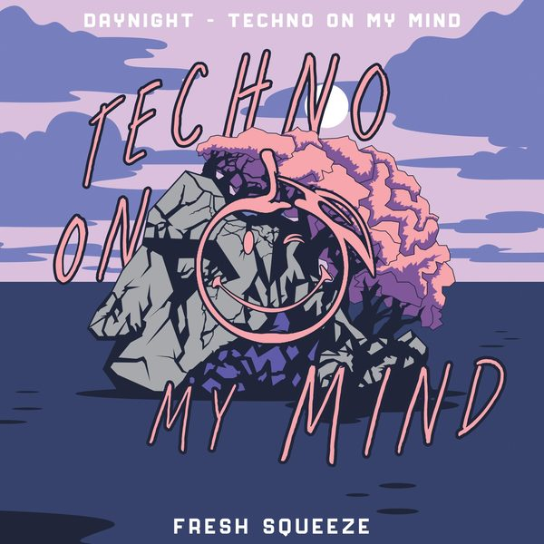

I 24 dischi
 1
In your arms for an angelTopic, Robin Schulz,Nico Santos,Paul van dyk
1
In your arms for an angelTopic, Robin Schulz,Nico Santos,Paul van dyk
 2
Won't forget youShouse
2
Won't forget youShouse
 3
AttractionFederico Scavo
3
AttractionFederico Scavo
 4
Moth to a flame - Chris Lake remixSwedish house mafia, The Weeknd
4
Moth to a flame - Chris Lake remixSwedish house mafia, The Weeknd
 5
I Think I Like ItVINNE
5
I Think I Like ItVINNE
 6
Human Touch - JLV RemixArmin van Buuren & Sam Gray
6
Human Touch - JLV RemixArmin van Buuren & Sam Gray
 7
Synthetic Blues - Matt Fax RemixKasablanca
7
Synthetic Blues - Matt Fax RemixKasablanca
 8
Change My WorldSam Martin, AVIRA
8
Change My WorldSam Martin, AVIRA
 9
Don't Be AfraidVolac
9
Don't Be AfraidVolac
 10
See You WorkEddie Thoneick
10
See You WorkEddie Thoneick
 11
Original SinSofi Tukker
11
Original SinSofi Tukker
 12
Too highGregor Potter x Linka x EWAVE
12
Too highGregor Potter x Linka x EWAVE
 13
My thingDisco Fries & Triple M
13
My thingDisco Fries & Triple M

14 Techno on my mindDay Night 15
Like ThisMerk & Kremont x Too Many Zooz
15
Like ThisMerk & Kremont x Too Many Zooz
 16
Side EffectAlok
16
Side EffectAlok
 17
Like ThisSyn Cole
17
Like ThisSyn Cole
 18
I Love The Way You MoveSwanky Tunes
18
I Love The Way You MoveSwanky Tunes
 19
Work My BodySuperlover
♪
20
Tell It To My Heart - Dj Vincenzino Mash upMeduza Ft. Hozier
19
Work My BodySuperlover
♪
20
Tell It To My Heart - Dj Vincenzino Mash upMeduza Ft. Hozier
 21
OrgasmoAngel Heredia
21
OrgasmoAngel Heredia
 22
Last 4 EvaFletcher Kerr
22
Last 4 EvaFletcher Kerr
 23
VerdadAntho Decks
23
VerdadAntho Decks
 24
Be FreeMarc Joef,Mimmo Errco
24
Be FreeMarc Joef,Mimmo Errco
La tracklist
- 1 In your arms for an angel Topic, Robin Schulz,Nico Santos,Paul van dyk Intercord
- 2 Won't forget you Shouse Hell Beach
- 3 Attraction Federico Scavo Area 94
- 4 Moth to a flame - Chris Lake remix Swedish house mafia, The Weeknd Republic Records
- 5 I Think I Like It VINNE Revealed Recordings
- 6 Human Touch - JLV Remix Armin van Buuren & Sam Gray Armada Music
- 7 Synthetic Blues - Matt Fax Remix Kasablanca Armada Music
- 8 Change My World Sam Martin, AVIRA A State Of Trance Radio
- 9 Don't Be Afraid Volac Repopulate Mars
- 10 See You Work Eddie Thoneick Solotoko
- 11 Original Sin Sofi Tukker Ultra Records
- 12 Too high Gregor Potter x Linka x EWAVE Hexagon
- 13 My thing Disco Fries & Triple M Hexagon
- 14 Techno on my mind Day Night Hexagon
- 15 Like This Merk & Kremont x Too Many Zooz Future House Music
- 16 Side Effect Alok CONTROVERSIA
- 17 Like This Syn Cole Spinnin' Records
- 18 I Love The Way You Move Swanky Tunes Hysteria Records
- 19 Work My Body Superlover Big Top Amsterdam
- 20 Tell It To My Heart - Dj Vincenzino Mash up Meduza Ft. Hozier Mashup
- 21 Orgasmo Angel Heredia La Pera Records
- 22 Last 4 Eva Fletcher Kerr Toolroom Records
- 23 Verdad Antho Decks Terms & Conditions Records
- 24 Be Free Marc Joef,Mimmo Errco Black Lizard Records